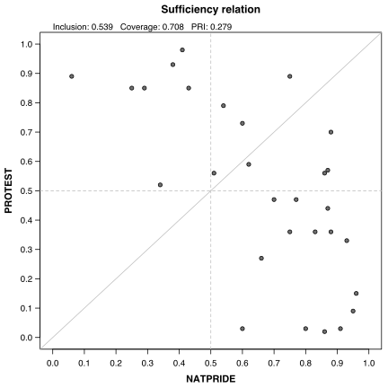
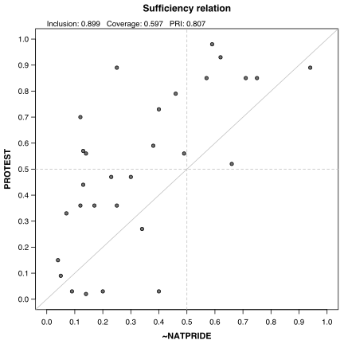
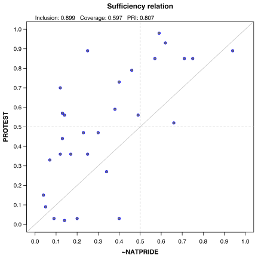
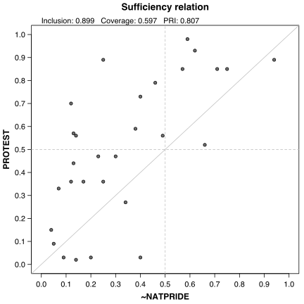
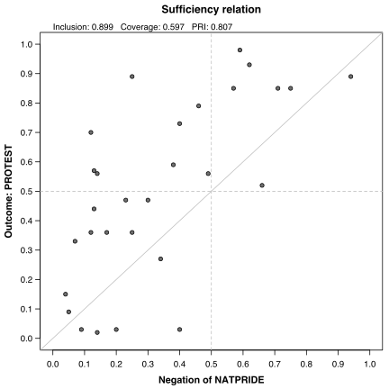
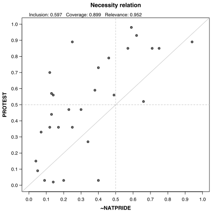
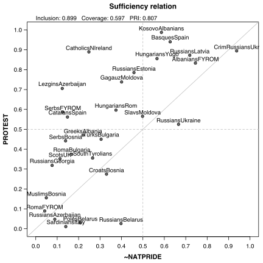
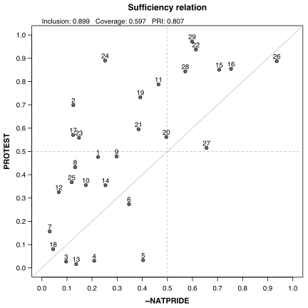
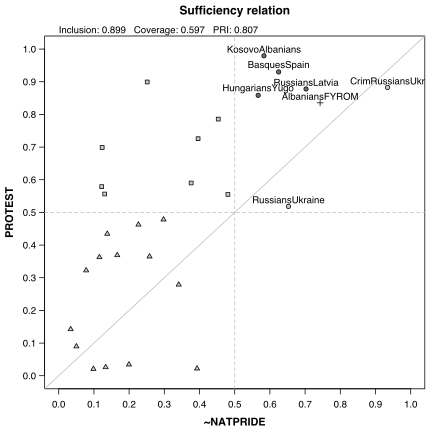
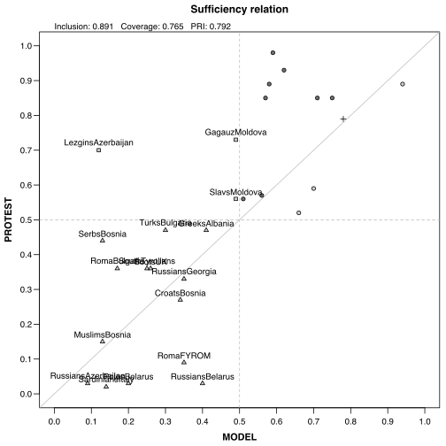

This function creates an XY plot from the first two columns of a dataframe/matrix, or from two separate vectors of numeric values.
XYplot(x, y, data, relation = "sufficiency", mguides = TRUE, jitter = FALSE, clabels, enhance = FALSE, model = FALSE, ...)
x |
A string with the name of the column from the data for the X axis,
or the coordinates of points in the plot (either a matrix/dataframe with at least
two columns, or a vector of values for the X axis). |
|||
y |
A string with the name of the column from the data for the Y axis,
or the Y coordinates of points in the plot, optional if x is a matrix / dataframe. |
|||
data |
A calibrated dataset, only if x and y are names. |
|||
relation |
The set relation to Y, either "sufficiency" (default) or
"necessity". |
|||
mguides |
Logical, print the middle guides. | |||
jitter |
Logical, jitter the points. | |||
clabels |
A vector of case labels with the same length as x and y |
|||
enhance |
Logical, if TRUE print the points using different characters
for each of the five significant regions for process tracing. |
|||
model |
Logical, for an enhanced plot specify if the SOP expression in argument
x is a solution model. |
|||
... |
Other graphical parameters from ?par |
If x is a dataframe or a matrix, the X and Y labels will be taken
from the column names of x, otherwise they will be inferred from
the names of the x and y objects that are passed to
this function.
x can also be a string containing either the name of the column
for the X axis, or two column names separated by a comma, referring to the X
and Y axis respectively. When x contains both X and Y column names,
the next argument will be considered as the data.
If data is provided, and the names of the X and Y columns are valid
R statements, quoting them is not even necessary and they can be negated using
either a tilde "~" or "1 - ".
The numeric values should be restricted between 0 and 1, otherwise an error is generated.
The XY plot will also produce inclusion and coverage scores for a sufficiency
or a necessity relation, along with PRI for a sufficiency relation
and RoN (relevance of necessity) for a necessity relation.
The argument ... is used to pass various graphical parameters for the
various plotting functions used.
The points have a default cex (character expansion) value of 0.8, and
a default pch value of 21 (filled points), which can be modified
accordingly (for example with value 1 of empty points). When pch = 21,
the color for the margins of the points can be specified via the argument
col, while the argument bg will determine the fill color
of the points.
The axis labels have a default cex.axis value of 0.8, which affects
both the tickmarks labels and the axis labels.
When jittering the points, default values of 0.01 are used for the parameters
factor and amount, on both horizontal and vertical axes.
The argument enhance does all the work for the shape of the points
and their colors, acording to the five regions specified by Schneider & Rohlfing (2016),
who augmented the classical XY plot with process tracing.
The default enhanced XY plot has even more settings when the input SOP expression is
a minimization model (different colors, different regions where to place the labels etc.),
available by activating the argument model. The model is automatically
detected if the input for x is a minimization object.
Schneider, C.; Wagemann, C. (2012) Set-Theoretic Metods for the Social Sciences. A Guide to Qualitative Comparative Analysis. Cambridge: Cambridge University Press.
Cebotari, V.; Vink, M.P. (2013) “A Configurational Analysis of Ethnic Protest in Europe. International Journal of Comparative Sociology vol.54, no.4, pp.298-324.
Schneider, C.; Rohlfing, I. (2016) “Case Studies Nested in Fuzzy-set QCA on Sufficiency. Formalizing Case Selection and Causal Inference” Sociological Methods and Research vol.45, no.3, pp.536-568, DOI: 10.1177/0049124114532446
# Cebotari & Vink (2013) # necessity relation between NATPRIDE and PROTEST XYplot(CVF[, 5:6])# same using two numeric vectors XYplot(CVF$NATPRIDE, CVF$PROTEST)
# same using two column names XYplot("NATPRIDE, PROTEST", data = CVF) # or using one string containing both XYplot("NATPRIDE, PROTEST", data = CVF) # since they are valid R statements, it works even without quotes # (this only works in the normal R console, not in the GUI version) XYplot(NATPRIDE, PROTEST, data = CVF) # negating the X axis, using numeric vectors XYplot(1 - CVF$NATPRIDE, CVF$PROTEST)
# same thing using quotes XYplot("1 - NATPRIDE, PROTEST", data = CVF) # using tilde for negation XYplot("~NATPRIDE, PROTEST", data = CVF) # different color for the points XYplot("~NATPRIDE, PROTEST", data = CVF, col = "blue")
# using a different character expansion for the axes XYplot("~NATPRIDE, PROTEST", data = CVF, cex.axis = 0.9)
# custom axis labels XYplot("~NATPRIDE, PROTEST", data = CVF, xlab = "Negation of NATPRIDE", ylab = "Outcome: PROTEST")
# necessity relation XYplot("~NATPRIDE, PROTEST", data = CVF, relation = "necessity")
# jitter the points XYplot("~NATPRIDE, PROTEST", data = CVF, jitter = TRUE)# jitter with more amount XYplot("~NATPRIDE, PROTEST", data = CVF, jitter = TRUE, amount = 0.02)# adding labels to points XYplot("~NATPRIDE, PROTEST", data = CVF, jitter = TRUE, cex = 0.8, clabels = rownames(CVF))
# or just the row numbers, since the labels are very long XYplot("~NATPRIDE, PROTEST", data = CVF, jitter = TRUE, cex = 0.8, clabels = seq(nrow(CVF)))
#----- # enhanced XY plot for process tracing XYplot("~NATPRIDE, PROTEST", data = CVF, enhance = TRUE, jitter = TRUE)
# enhanced XY plot for a solution model sol <- "natpride + DEMOC*GEOCON*POLDIS + DEMOC*ETHFRACT*GEOCON" XYplot(sol, "PROTEST" data = CVF, enhance = TRUE, model = TRUE)
# same plot, automatically detected from object pCVF ttCVF <- truthTable(CVF, "PROTEST", incl.cut = 0.85) pCVF <- minimize(ttCVF, include = "?") XYplot(pCVF$solution[1], "PROTEST", data = CVF, enhance = TRUE)